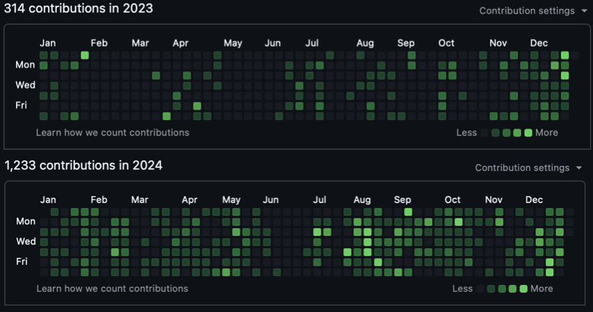

Unless you occasionally choose to operate at a significant proportion of the speed of light, the way you experience each year of your adult life should feel temporally alike. Despite this fundamental constraint, many claim that the rate at which you experience life "speeds up" after a certain age. Some claim that this has to do with a reduced frequency of novel events, while other work argues it has something to do with neurodegeneration and a reduced efficiency in visual perception. In supporting either one of those points of view, I would be well out of my depth.
Regardless of the cause (or existence) of such phenomena, I thought it might be a good idea to write out a fresh recounting of the year I just experienced before my brain undoubtedly starts its process of confabulation.
I started the year continuing to grow in my role at Motional, where I learned and built some interesting things. I received invaluable guidance on how to go from writing scrappy code with copious technical debt creation to being able to design reliable (reasonably) large scale systems that generate slightly less debt. I used this guidance to architect and implement a multi-stage ML system that aimed to automate the operational/engineering processes of detecting and diagnosing failures across the autonomous vehicle fleet. Building something that processed tremendous amounts of multimodal data was a great learning experience.
On a related note, I was invited to be a reviewer at the ACM SIGCHI Conference on Automotive User Interfaces and Interactive Vehicular Applications (AutoUI) this year. This was a novel experience that I really enjoyed and learned a lot from - particularly about the current state of research in automotive human-machine interaction.
Eventually, my time at Motional was cut short due to restructuring at the company. Nonetheless, I'm grateful for what I learned there and the people I got to work with. Shortly after this, I started a new role at Intersystems Corporation in Cambridge, MA.
I spent a good amount of my "free time" building independent projects this year. With some of these, the focus was the process. I built things with the objective to learn the skills necessary to build them. Others were built with the intent to produce real value. I've listed some of these from each category below.

GitHub contributions in 2024 compared to 2023. I'm aware this isn't an ideal metric to optimize for, but I'm happy there was an increase in output.
I am yet to "ship" any of the projects in this category, but these were developed (or are being developed) with the intention of producing real value. I'm going to follow up with more detailed Essays individually describing these projects, but for the sake of documenting everything of significance I did this year in one place, I built:
In addition to working on my own projects, I finally started contributing to a few open source projects this year (better late than never). I hope that this becomes a larger part of my life moving forward.
I managed to read a number of books that had been collecting dust in my bookshelf for a while. I won't list all of them here (you can see my bookshelf), instead I wanted to capture a series of snippets (quotes, interpretations) that I would not like to lose. Below is a list of a few of these
The Idea Factory (John Gertner) and The Computer and The Brain (John Von Neumann)
It's possible for a small contingency of the most brilliant people of a period to see the future. If you brought the average person (including the average scientist/engineer) who lived in the 1940s to 2024 and exposed them to a high fidelity augmented reality device or told them about the wonders of AI we've created, it quite possibly would lead to an anxiety attack. However, if you could bring John Von Neumann or Claude Shannon to the present, it would probably feel "just right" to them. They'd then probably find their bearings and shortly make their way to research labs where they'd immediately start contributing to the state of the art. How many Shannons and Von Neumann's do we have in the world today?
The Bhagavad Gita
Hackers and Painters (Paul Graham)
Programming is more akin to an art than science. This is not to say there aren't fundamental aspects of programming that are deeply rooted in science, as a matter of fact a lot of the work I'm interested in is scientific. But outside of finding optimal solutions to constrained problems, the process of building a magical product is more artistic than it is scientific.
I'd like 2025 to be a year where I continue to develop along the same axes with greater compounding effects. Specifically, I'd like to be able to ship a few different paid products of my own and take some leaps entrepreneurially. I also want to continue to build things to learn things. A non-exhaustive list of things I'd like to learn more about are:
It is my hope that this essay elicits higher accountability from me. When I write the 2025 version of this, it should feel like I continued growing along these axes at an increased rate. If this is not the case, I have not done myself justice.